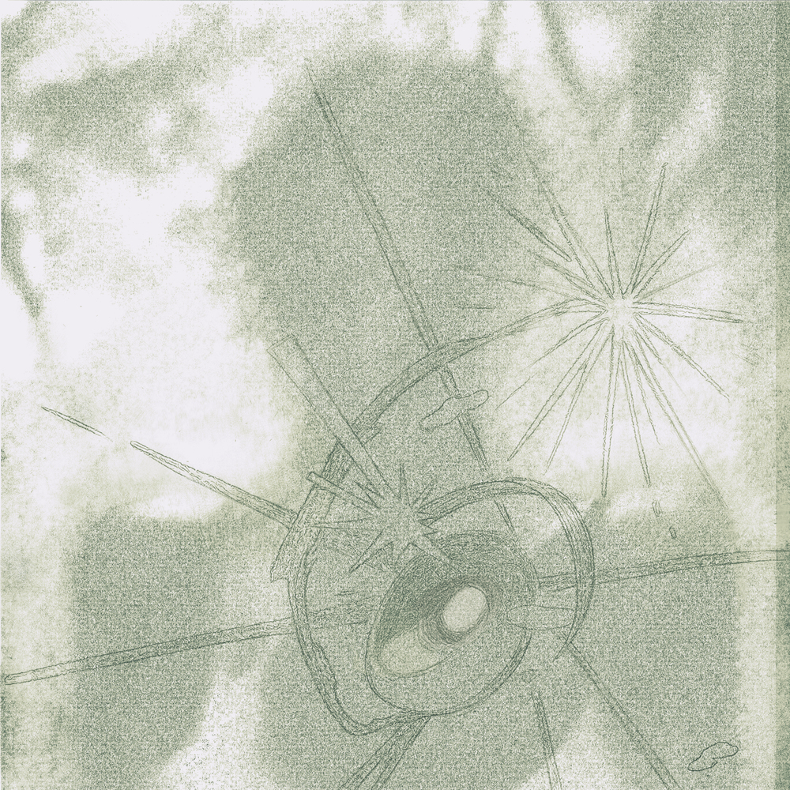

안녕하세요 라보엠입니다. 2025년, 스트리밍 시대에도 인디음악은 그 어느 해보다 깊고 풍부하게 다가오고 있습니다. 감성의 결이 살아있는 신작들, 독창적인 아티스트의 성장, 우리 삶의 순간을 채워주는 다섯 곡을 엄선해 추천해드립니다. 저의 취향을 담아최근 인디 음악 신에서 가장 빛나는 5팀의 대표 곡을 소개해드리겠습니다.
1. 음성녹음 – 「Drifter」
음성녹음이 2025년 몽환 신스팝으로 돌아왔습니다.세련된 일렉트로닉 위에 감정이 묘하게 일렁이는, 그래서 듣고 있으면 잠시 현실을 떠나게 만드는 곡입니다. 롤러코스터와 윤상의 사운드를 섞은듯한 신곡 ‘Drifter’에서는 도시에 잔잔히 내리는 밤비 같은 분위기와, 아주 사적인 외로움이 겹쳐집니다. 이 곡을 택하는 순간, 당신의 감성 플레이리스트는 한층 우아해질 거예요. 이 곡과 비슷한 OffCourse 도 추천드리며 해피새드, Orange summer breeze, 날카롭냐하는데 같은 밴드 사운드도 잘만든답니다.
“음성녹음의 음악은 헤드폰 한쪽에 기대어 걷는 새벽 산책 같은 기분을 줍니다. 몽환적인 사운드는 일상의 소음을 잠재웁니다.”

2. 주혜린 – 「미친 건가 (COOL EP)」
밝지만 어딘지 모르게 쓸쓸함이 깃든 주혜린의 곡. 2025년 한국대중음악 올해의 신인으로 선정된올여름 가장 먼저 찾아온 청량하고 발랄한 목소리입니다. 일상에서 흔히 느끼는 ‘내가 미쳤나’ 싶은 순간들을 가사로 녹였고, 누구나 공감할 수 있는 보편적 감성이 매력적. 신예 싱어송라이터의 신선함, 노래방에서 불러도 딱 좋은 경쾌한 곡입니다.
우효의 ‘민들레’는 들을 때마다 희망의 씨앗처럼 가슴 한켠에 뿌려지는 곡입니다. 영롱한 신스와 투명한 그녀의 보컬이, 내 안의 어린 시절을 다시 꺼내 놓게 하죠. 몽환적인 멜로디 위에 때로는 쓸쓸하게, 때로는 환하게 퍼지는 물결—한국 신스팝 사운드의 정수!
“우효는 현실과 환상 사이를 헤엄치는 듯한 목소리 우리의 마음을 한없이 가벼워지게 합니다.”
4. 권순관 – 「여행자(2025 EP)」
노리플라이 시절 감성을 품고 더욱 깊어진 권순관의 ‘여행자’. 2025년 신보로, 평범한 일상을 여행에 빗대어 노래합니다. 문학적인 서사, 고요하지만 은은한 사운드, 존재의 의미를 곱씹게 하는 가사가 인상적입니다. 귀로 듣는 한 편의 에세이처럼, 차분한 위로가 필요할 때 추천드립니다.
일렉트로닉과 인디의 경계를 부드럽게 허무는 숀. ‘밤산책’은 도시의 새벽, 누구나 느껴봤을 그 고요하고 차분한 분위기를 정확히 짚어냅니다. 산책하며 듣거나, 자기 전 잠깐의 휴식에 기막힌 노래. “도시의 별과 함께 걷는다”는 감각적인 가사와, 숀 특유의 섬세한 프로듀싱이 돋보입니다.
“밤의 온도, 길가의 불빛, 가만히 걷는 마음. 숀의 ‘밤산책’은 우리 모두의 밤을 위한 노래”
맺음말
위 5곡 모두 2025년 인디 신에서 주목 받고 있는 작품입니다. 노래 한 곡에 담긴 이야기를 천천히 되뇌어 듣다보면 잔잔한 힘과 감동이 숨어있습니다.음악 플랫폼에서 ‘인디 발라드’, ‘몽환 신스팝’, ‘도시 산책 감성’ 같은 키워드로 찾아보면 숨은 명곡들도 금방 만날 수 있어요. 인디 음악은 우리를 위로하고, 때론 새로운 세계로 이끌어줍니다. 꼭 한 번, 이 곡들을 들으며 나만의 플레이리스트를 만들어보세요. 오늘 하루의 끝에, 소소한 위로와 설렘을 느끼실 수 있을 거예요. 음악은 감성, 그리고 우리 모두의 이야기입니다. 오늘도 인디 음악과 함께, 평범한 하루를 특별하게 만들어보시길 바랍니다